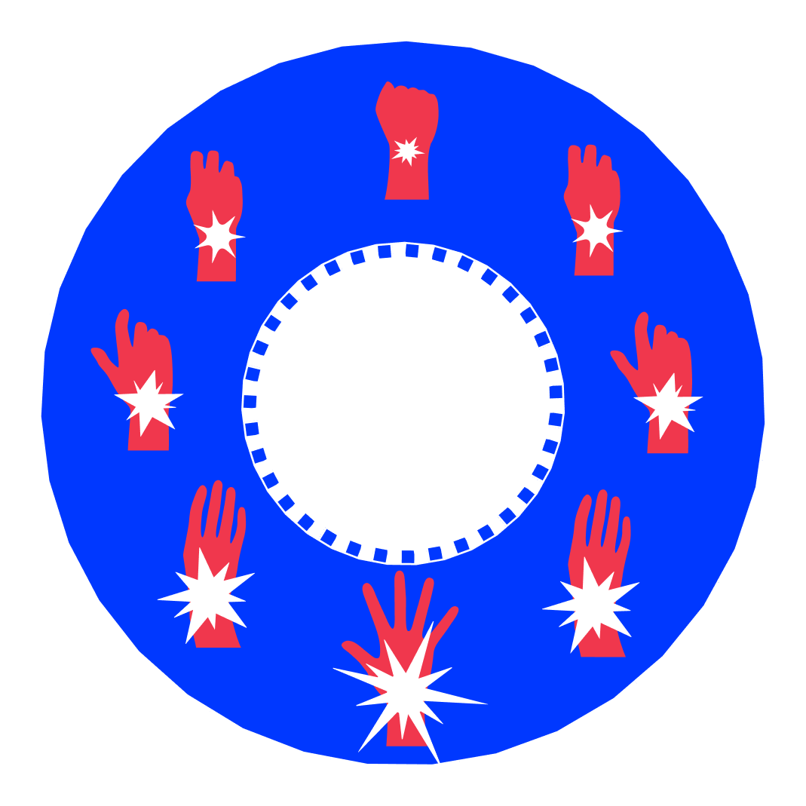
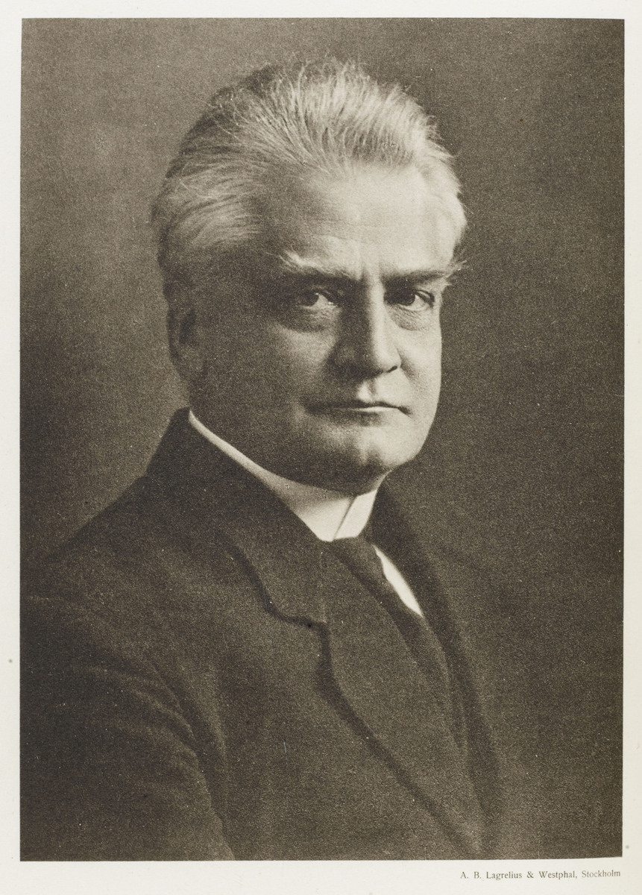
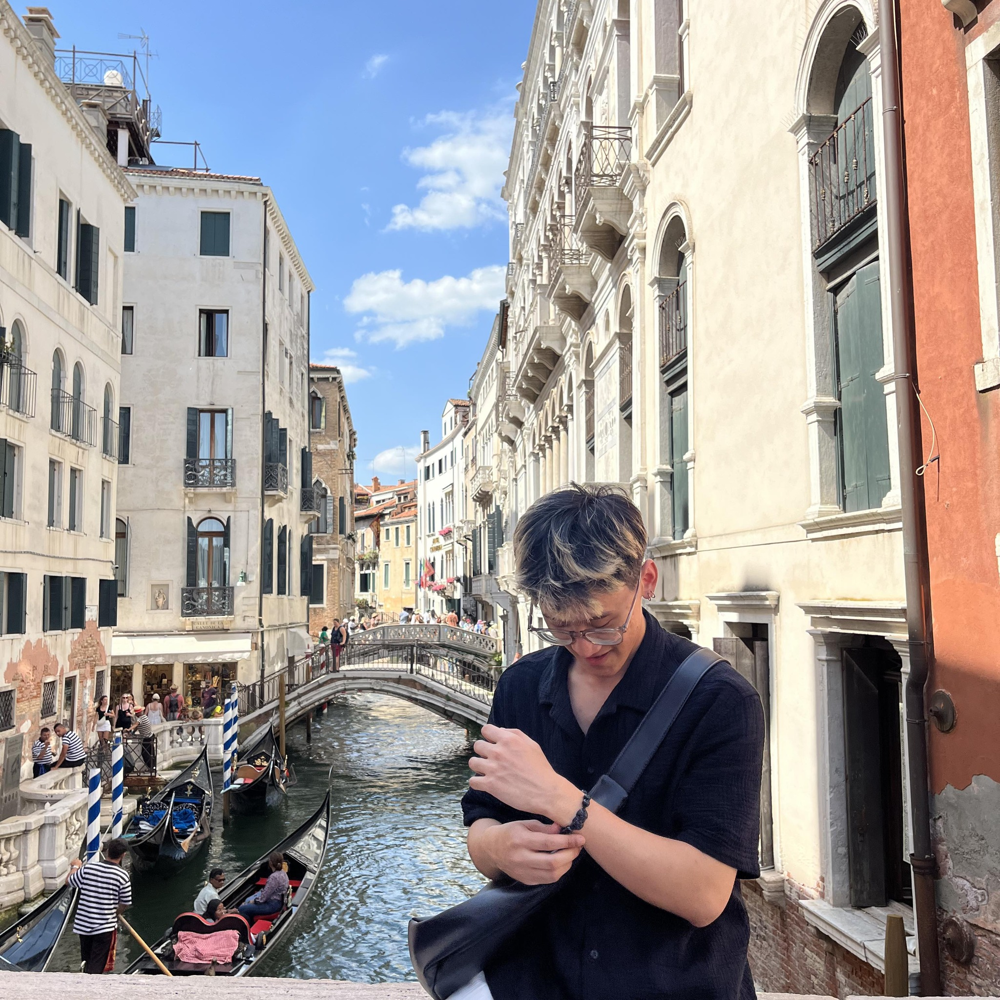

2026
Withdrawal Symptoms
"ADMIT THE ADDICTION
FORGE THE DISCIPLINE"


This project is aimed at people experiencing Internet Addiction Disorder (IAD) or showing early signs of internet addiction caused by the desire to escape stress, anxiety, or unresolved emotions through the digital world.
We offer a recovery website inspired by the 12 Steps Program. Users will go through three stages: awareness, admission, and action. Our goal is to guide people struggling with internet addiction toward recovery, healthier digital habits, and better mental well-being.
Sustainable Development Goal 3 aims to ensure healthy lives and well-being for all. In the context of Internet Addiction Disorder (IAD), this goal is relevant as excessive internet use can harm mental and physical health. Addressing anxiety, depression, sleep disturbance, stress, and screen-related issues helps promote healthier lifestyles in the digital age.
UNICEF's mission to protect the well-being of young people connects to this project. As excessive internet use increases anxiety, sleep loss, stress, and unhealthy habits, promoting healthier digital behavior supports UNICEF's goal of helping youth grow in safe and healthy environments.
"Technology is a useful servant but a dangerous master."
— Christian Lous Lange
This quote relates to SDG 3: Good Health and Well-being, especially Target 3.4, which promotes mental health and well-being. It is relevant to young adults aged 18–25, a group highly exposed to smartphones and social media. The quote suggests that technology is useful as a tool, but harmful when it controls behavior. In the context of IAD, loss of control can lead to stress, anxiety, sleep problems, and reduced well-being. This supports the project's aim to encourage healthier digital habits.

In the digital era, the rapid rise of short-form content has reshaped how people consume information. Users are often pressured to keep up with trends, driven by FOMO and highly optimized algorithms built for speed and convenience. While digital platforms make connection easier, they also create a repetitive cycle of low-value content consumption. As a result, increased screen time negatively impacts both mental and physical well-being.
The mental effects of excessive internet use are increasingly concerning, especially among young adults. Research links problematic internet use to anxiety, depression, stress, emotional instability, and sleep disturbance. What begins as an escape can gradually become dependency.
The physical effects are also serious. Prolonged screen use can cause eye strain, headaches, neck and back pain, fatigue, and reduced energy. In severe cases, repetitive device use may also lead to Carpal Tunnel Syndrome.
